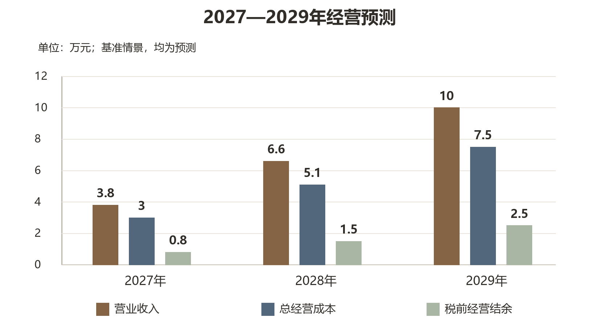
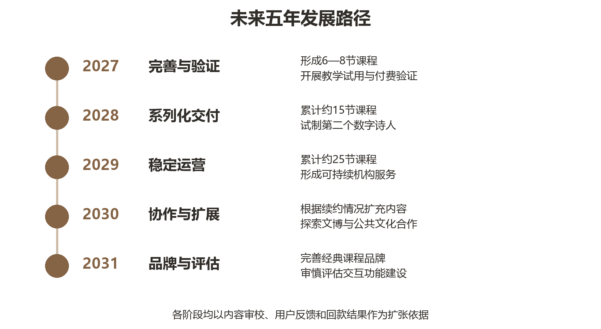

01
李圣贤 项目负责人
2025级 · 机器人工程
项目统筹、数字人制作流程与成片质量
TEAM & ROADMAP / 团队与规划
以已完成的《登高》微课为起点，按照内容质量、使用反馈与资源条件逐步推进。
PROJECT TEAM / 项目团队
指导老师：郝路露、张姝
2025级 · 机器人工程
2025级 · 税收
2025级 · 经济统计学
2025级 · 经济统计学
2025级 · 经济统计学
负责人自我评价我愿意从熟悉的诗词内容出发，尝试用数字人和 AIGC 探索新的表达方式，并在实践中持续验证创意是否真正服务于学习。我具备主动学习和推进项目的意愿，也认识到团队合作、内容审校与用户反馈同样重要。后续我希望逐步建立清晰的成本、定价和交付意识，在保证内容质量与合规的前提下探索可持续的项目运营方式。
李圣贤 · 第一人称自述
PROJECT MODEL / 项目发展模式
以下是计划中的路径，收入与合作均以实际验证和书面约定为前提。
逐步完善视频、讲解提纲、课堂活动建议与练习材料，探索机构年度授权。
根据主题、内容审校与交付范围，探索面向学校及教育机构的定制制作。
在样片质量和用户反馈得到验证后，再评估扩展角色与课程服务。
FINANCIAL OUTLOOK / 财务规划
基准情景测算，均为规划假设，不是已实现收入。

| 预测年度 | 营业收入 | 经营成本 | 税前经营结余 |
|---|---|---|---|
| 2027 | 3.8 | 3.0 | 0.8 |
| 2028 | 6.6 | 5.1 | 1.5 |
| 2029 | 10.0 | 7.5 | 2.5 |
预测基于课程资源包授权与微课定制两类规划收入，项目拟自筹启动周转资金 1 万元；资助申请作为备选，不计入已到账资金。实际经营结果将受客户验证、成本和回款周期影响。
FIVE-YEAR ROADMAP / 五年发展规划
以内容审校、真实使用反馈、续约与回款作为扩张依据。
